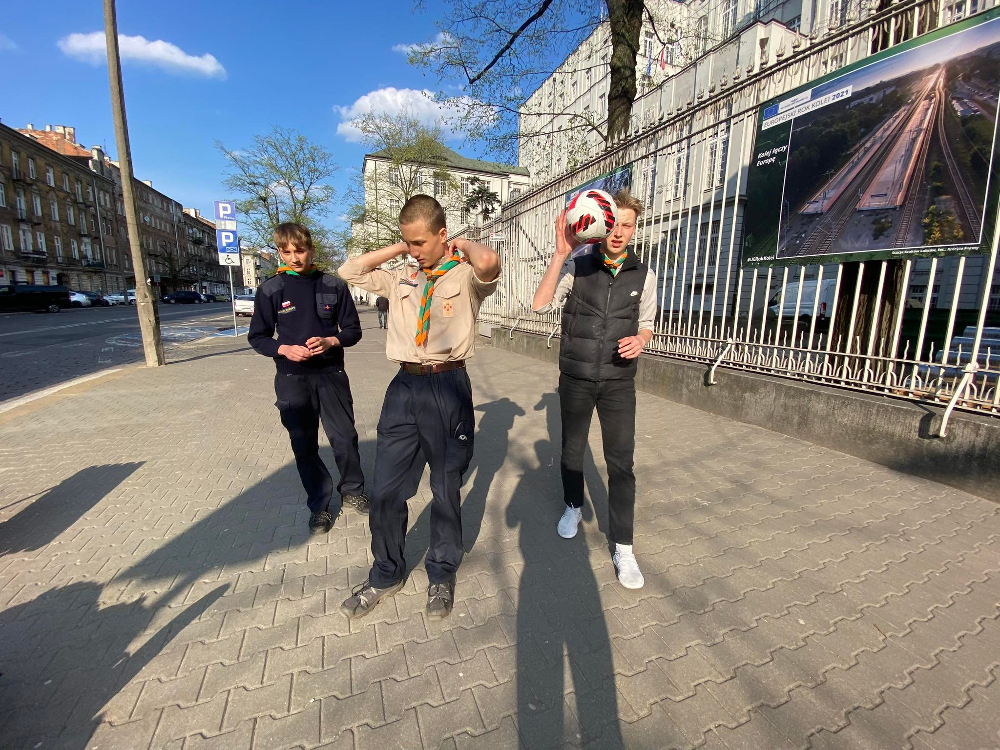
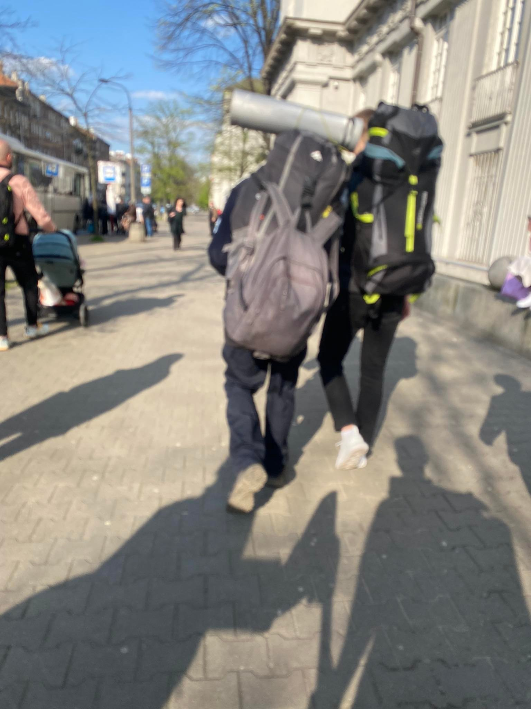
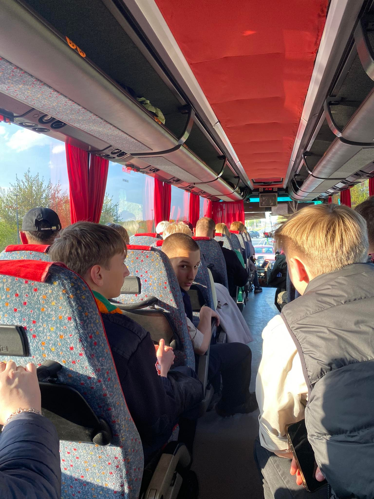
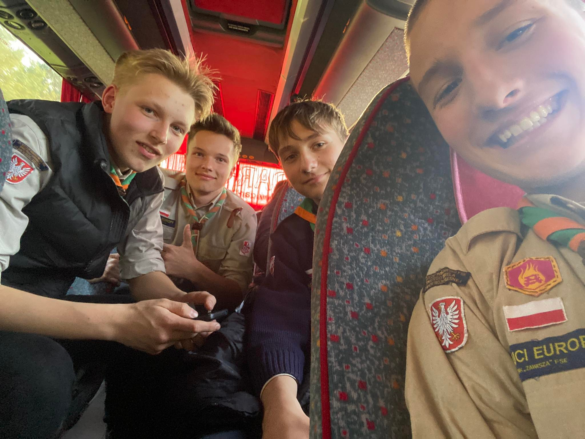
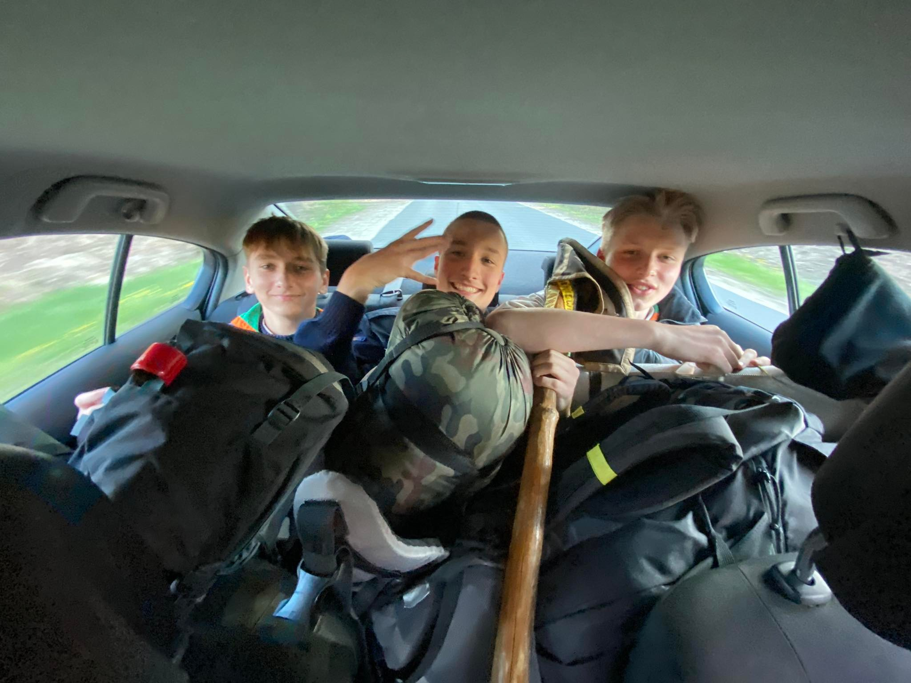
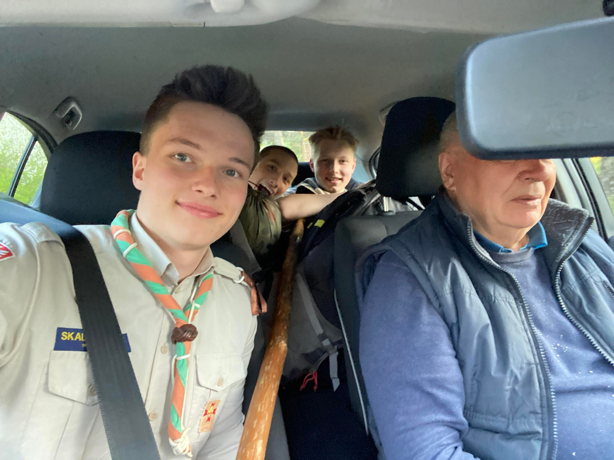
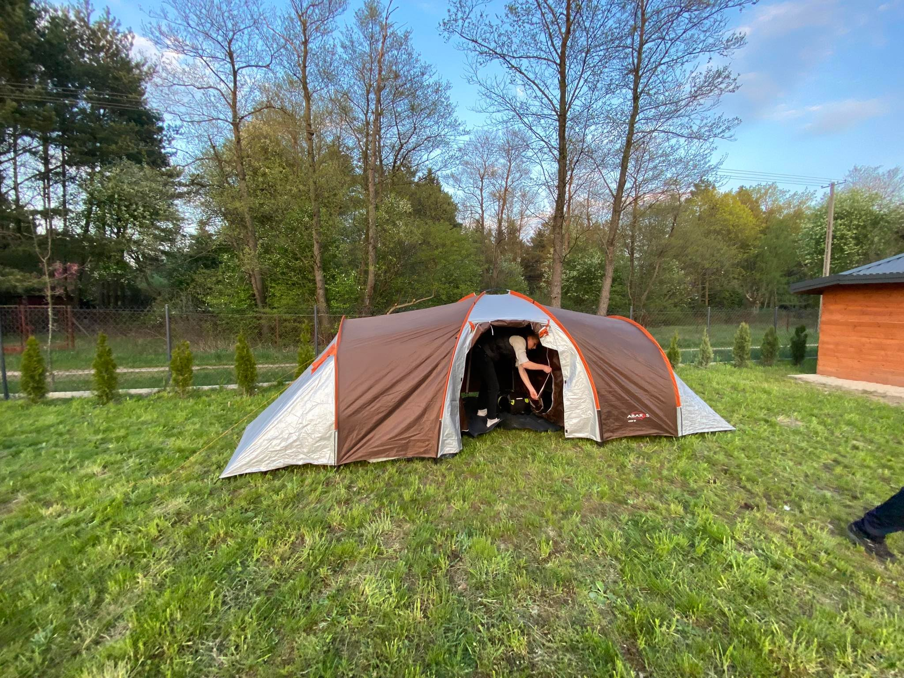
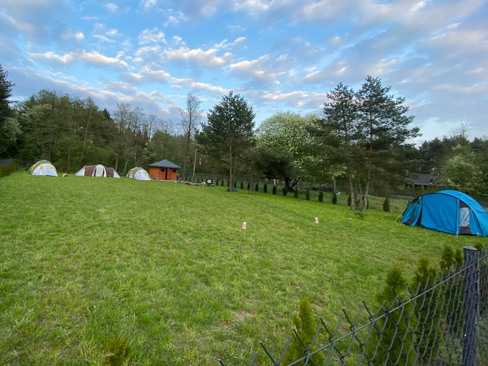

I dzień
Spotkaliśmy się w metrze o godz. 16.30, skąd wyruszyliśmy na przystanek autobusowy, skąd odjeżdzał PKS do Kamieńczyka. Byliśy ok. 30 min przed odjazdem, ponieważ rezerwacja biletów wcześniej była niemożliwa, więc kto pierwszy ten lepszy, była lekka adrenalinak czy się to uda zabrać.
 Pięć minut przed podjazdem autokaru, ludzie zaczeli się ustawiać i nadle praktycznie z niekąd zebrała sie grupaka 20 osób, też ustwiliiśmy się do kolejki. Na początku byliśmy na początku, po podstawieniu autobkaru okazało się, że plecaki musimy wsadzić do bagażnika. W ten sposób znaleźliśmy się na końcu, ale starczyło miejsc i się zabraliśmy.
 Po prawie godzinnej podróży dojeżdzaliśmy do Kamieńczyka, myśleliśmy, że autobus zajeżdza do miejscowośći i tam jest przystanek, jednak okazało się, że zatrzymuje się przy trasie szybkiego ruchu, skąd było 5km na mijsce, a nie 2.5 km. Zajeło by to nam około 1h, a pownninśmy być za 0.5h bo byliśmy gospodarzami na działce Dziadka, a inne zastępy już czekały. Po przejściu na drugą stronę ulicy, nagle zobaczyliśmy samochód naszego dziadka, który właśnie z tamtąd wracał i postanowiliśmy, że nas podwiedzie!
 Chwilę poźniej około 19 byliśmy już na miejscu, zastęp orzeł częściowo już czekał. Pierwsze co zrobliliśmy to było rozłożenie namiotu i rozpakowanie rzeczy. Udało nam się to zrobić jako pierwszym! Na ten dzień nie było zaplanowanych żadnych więcej aktywności. W czasie wolnym pograliśmy w piłkę, a jak już się zciemniało to w ostatniej chwili wybraliśmy się nad rzeczkę, która była 300 m od obozu.
 